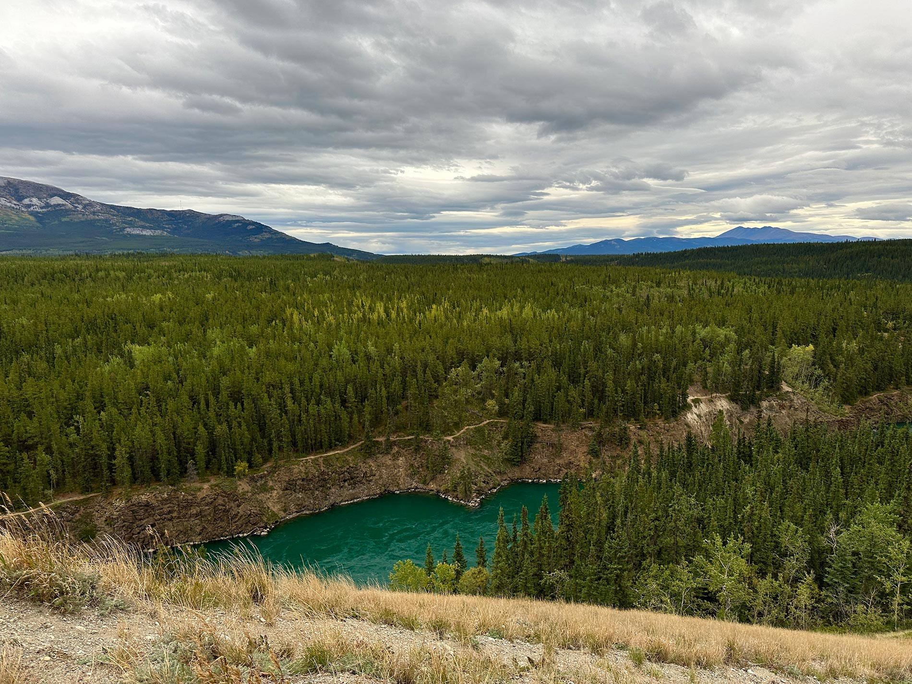
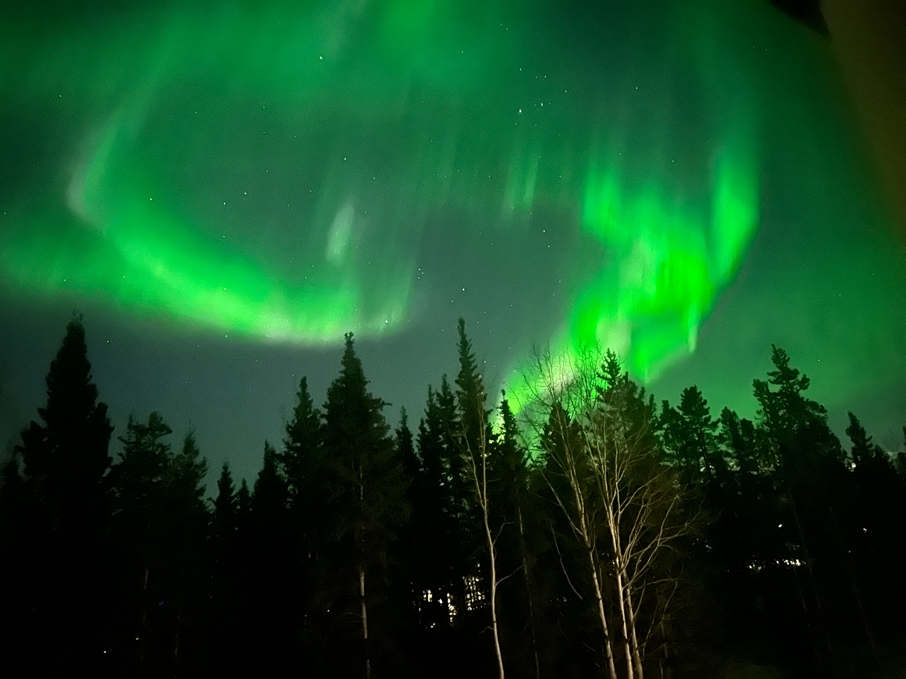
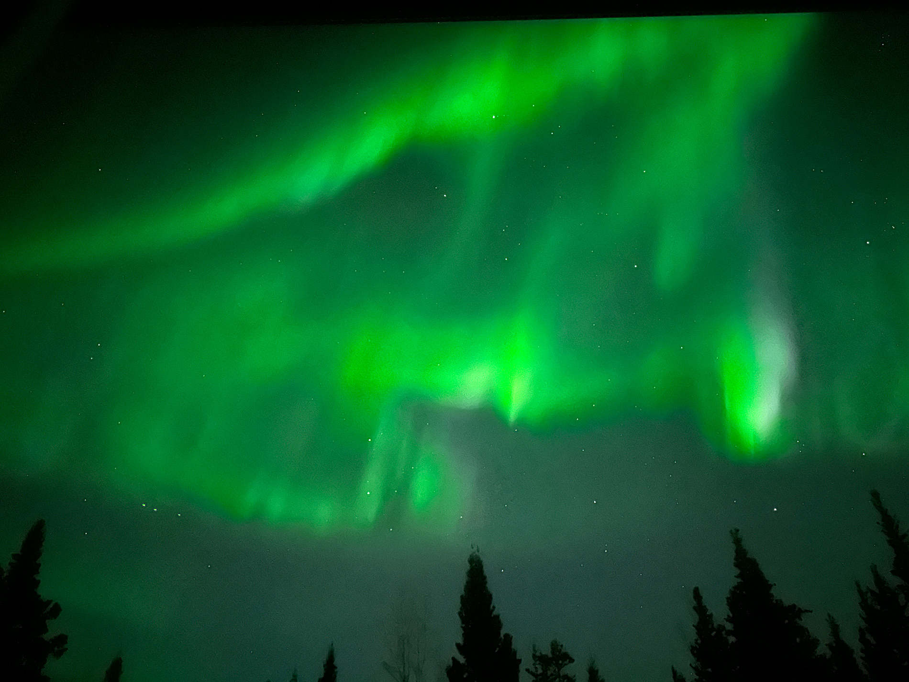
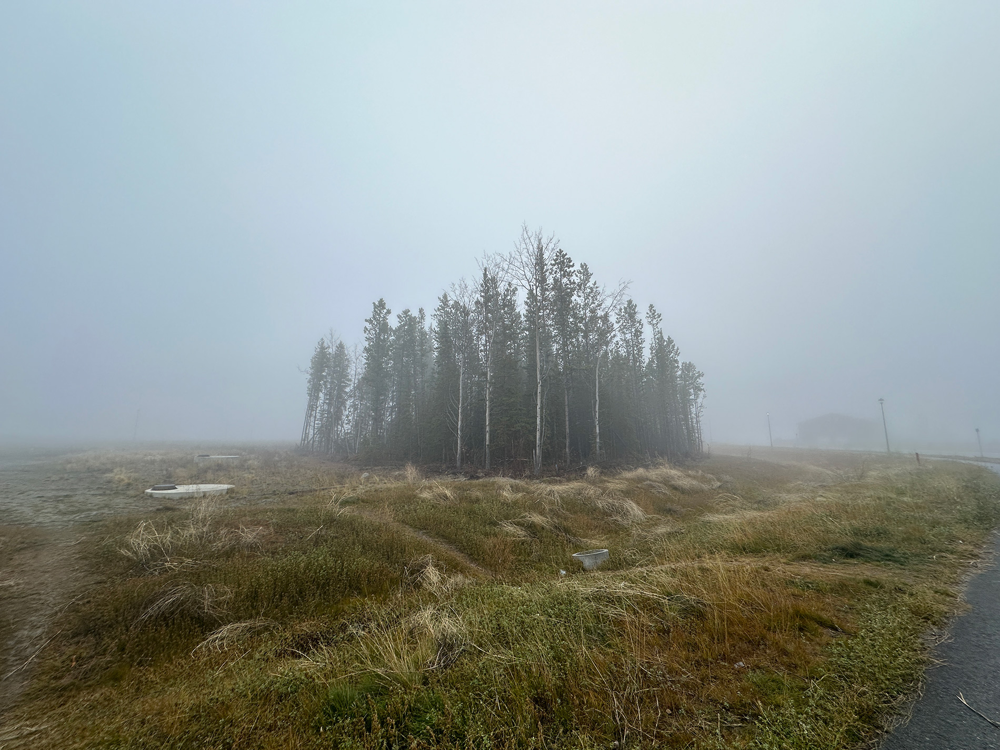
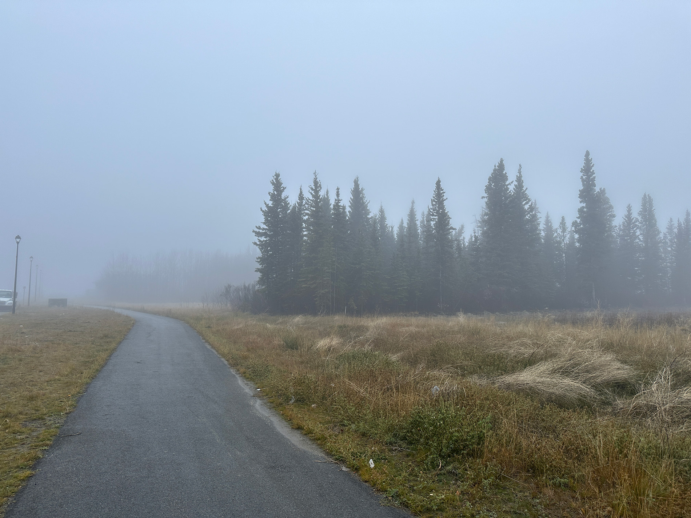
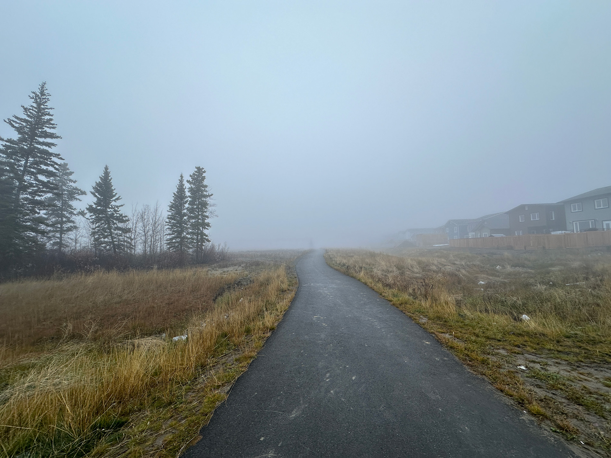
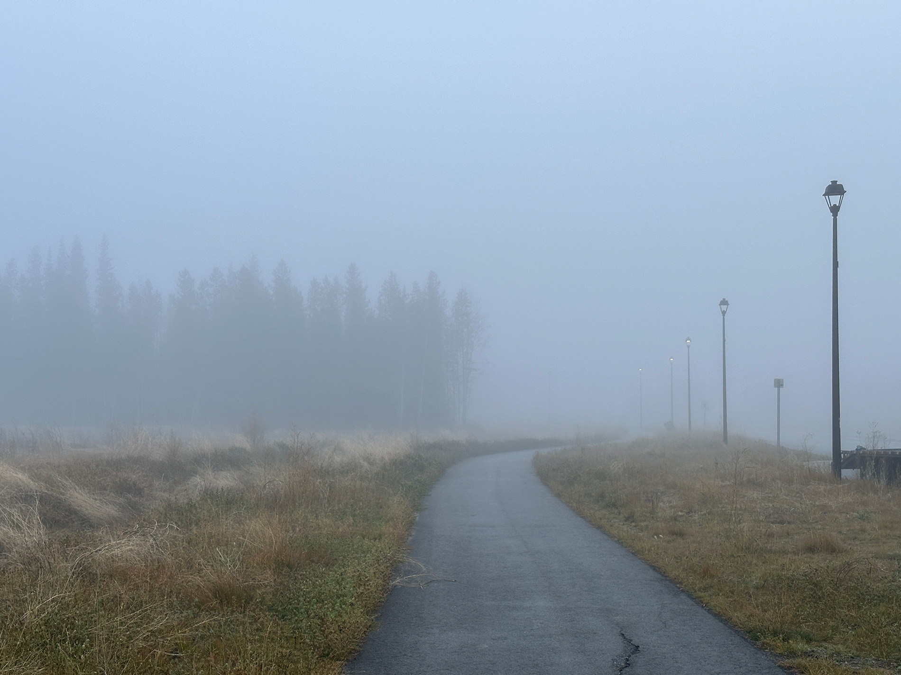

🕷
Hey there, welcome to my website! I'm Shekhroz Akhrorov, and I'm thrilled you're here. I'm a teacher, cook, athlete, artist, linguist, and a designer. I adore learning new languages, new places, new people. I have been working as a language instructor for 8 years and I strongly feel that teaching will be a part of my future career. I have huge interests in preserving the nature and am always ready to get my hands on to maintain greenness. I love planting trees and I've planted over 18000 trees so far, so it is my an always-come-back activity of all times. Besides, I like creating things like websites, designs, films. Although I am not professional in working with websites, I happened to find strong interests in me about it and I surely will keep pushing the boundries. This website is where I share my passions and adventures. From heartfelt designs to random pictures, it's all here. Warmly, Shekhroz.
© 2020-2024. Hand crafted with ❤ + Flexbox + CSS Grid by James Neufeld.